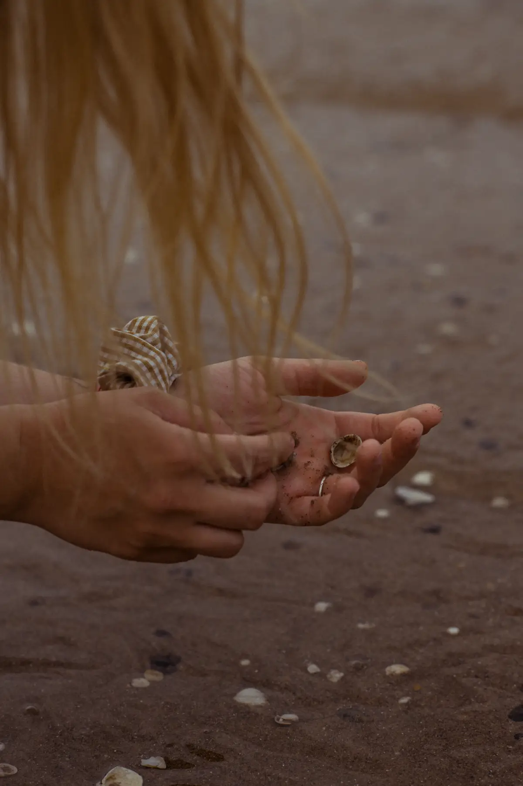

01
1:1 Transformation
Persönliche Begleitung an inneren Übergängen. Über somatische Wahrnehmung, Klang, Atem und Human Design entsteht ein Prozess, in dem du dich wieder klarer fühlen kannst.
Für Frauen, die nicht länger nur funktionieren wollen – sondern bereit sind, sich selbst wieder zu spüren.
— Tanja SauerHier geht es nicht darum, dich zu optimieren.
Es geht darum, dich zurückzuholen.

Dann bist du hier richtig.
Ein 8-Wochen-Online-Programm für Frauen, die sich selbst klarer erkennen wollen.
Du lernst, wer du bist, was du brauchst und wo deine Grenzen beginnen. Aus dieser Klarheit entsteht ein neuer innerer Raum, in dem du nicht länger nur über Veränderung nachdenkst, sondern beginnst, sie in deinem Körper und Leben zu verkörpern.
Dieser Raum verbindet Soma, Embodiment, Klang, intuitive Bewegung, Nervensystemarbeit, Ritual und Integration. Hier geht es darum, ehrlicher, empfangender und verkörpernder zu werden.
Trage dich ein, wenn du bereit bistPersönliche Begleitung an inneren Übergängen. Über somatische Wahrnehmung, Klang, Atem und Human Design entsteht ein Prozess, in dem du dich wieder klarer fühlen kannst.
8-Wochen-Programm für Soma, Embodiment, Klang, Nervensystemarbeit, Ritual und Integration. Nicht um mehr zu leisten – um feinfühliger zu werden.
Mehr erfahrenIntensive Auszeiten mit tiefem emotionalen Wert. Raus aus dem Alltag, rein in Tiefe, Natur, Körper und Gemeinschaft.
Platz sichernNiedrigschwelliger Einstieg: In Soma Sound, Soma Dance, Soma Wisdom und Frauenkreisen kannst du meine Arbeit erleben.
Alle aktuellen Termine·
Studio AUM, KoblenzRetreat ·
Korfu, Griechenland·
Studio AUM, Koblenz·
Studio AUM, Koblenz·
eins. Yoga & Pilates, Höhrgrenzhausen„Tanja hat mich mit ihrer geführten Meditation und den fast unbeschreiblich schönen Klängen ihrer Kristallschalen auf eine innere Reise mitgenommen. Diese Reise hält noch immer an. Ich danke ihr von Herzen für dieses vertrauten und intimen Raum."
Michaela M., 39 · Köln
„Ich wusste nicht, wie sehr ich innere Ruhe gebraucht habe, bis ich sie hier gefunden habe. Die Erfahrung hat mir geholfen, meinen Körper und Geist auf eine Weise zu verbinden, die ich mir nie vorgestellt hätte."
Hannah K., 36 · München
„Es war, als würde sich eine verborgene Tür in mir öffnen – eine tiefe Entspannung, die mich noch Tage danach begleitet hat. Ein Gefühl von Ankommen – bei mir selbst."
Lena S., 42 · Hamburg
„Ich hätte nie gedacht, dass eine so sanfte Praxis so tief wirken kann. Ich habe nicht nur Entspannung gefunden, sondern auch eine neue Verbindung zu mir selbst."
Johanna R., 29 · Berlin
„Die Atmosphäre war magisch – ein Raum, in dem man sich sicher fühlt, loszulassen. Ich bin mit mehr Klarheit und Leichtigkeit gegangen, als ich es mir je erhofft hätte."
Martina W., 39 · Stuttgart
Mein eigener Weg hat mich vom Funktionieren zurück ins Spüren geführt. Heute öffne ich Räume für Frauen, die bereit sind, ihrer inneren Wahrheit wieder näherzukommen.
Meine Arbeit ist sanft, aber nicht oberflächlich. Sie ist tief, aber nicht schwer.
Buche ein kostenloses 30-minütiges Kennenlerngespräch.
Dann schreib mir. Ob 1:1, Retreat, The Space Within oder ein erstes Event – wir finden heraus, was jetzt zu dir passt.
@transcending.women